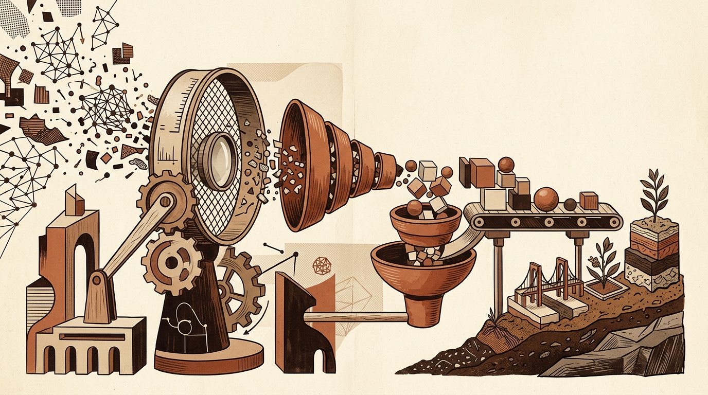

Daily digest
-
Towards Data Science
Optimizing Data Systems, Architectural Guardrails, and the Evolving Role of Data Scientists
Recent discussions in data engineering and machine learning focus heavily on optimizing data storage and enforcing architectural controls around automated systems. Practitioners are benchmarking how storage layout…
-
Sebastian Raschka
Tracing the Evolution of Text Classification Architectures
Text classification methodologies have experienced a steady progression, moving from foundational bag-of-words representations to deep learning approaches. This evolution spans Recurrent Neural Networks (RNNs),…
-
KDnuggets
Practical AI Workflows: Speech Transcription, Data Presentation, and Engineering Education
Recent developments in artificial intelligence emphasize specialized models built for targeted tasks alongside automation tools designed to simplify routine data workflows. Coverage of new model architectures highlights…
-
Hugging Face Blog
Advances in Tabular Prediction Efficiency and Source Verification for AI Agents
Recent updates to the Hugging Face Blog highlight developments in structured data modeling and reliability frameworks for autonomous agents. These posts focus on optimizing performance trade-offs for predictive tasks…
-

arXiv cs.LG
Advances in Machine Learning Evaluation, Compression, and Physical Grounding
A key theme in recent research is the critical re-examination of how machine learning models are evaluated across complex temporal and physical domains. Standard metrics often mask failure modes that arise in practical…